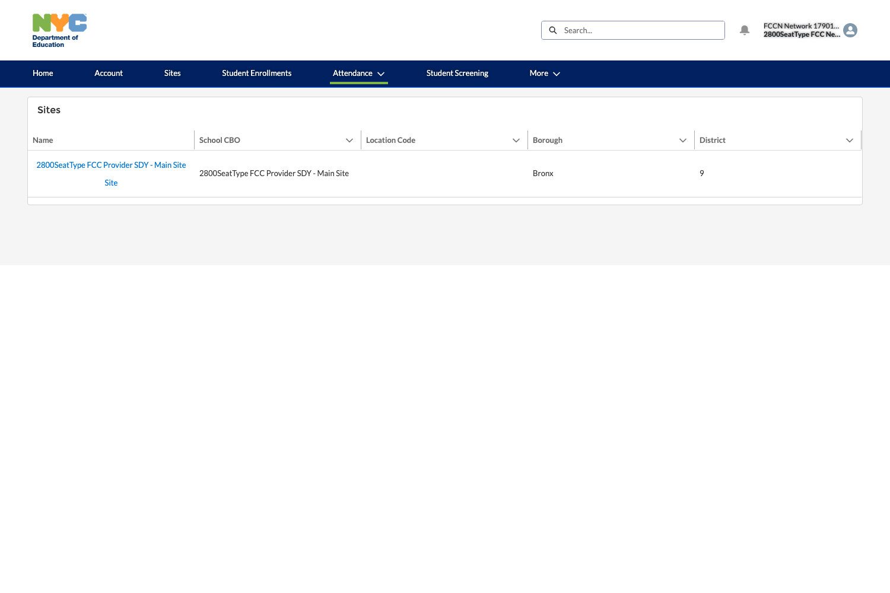
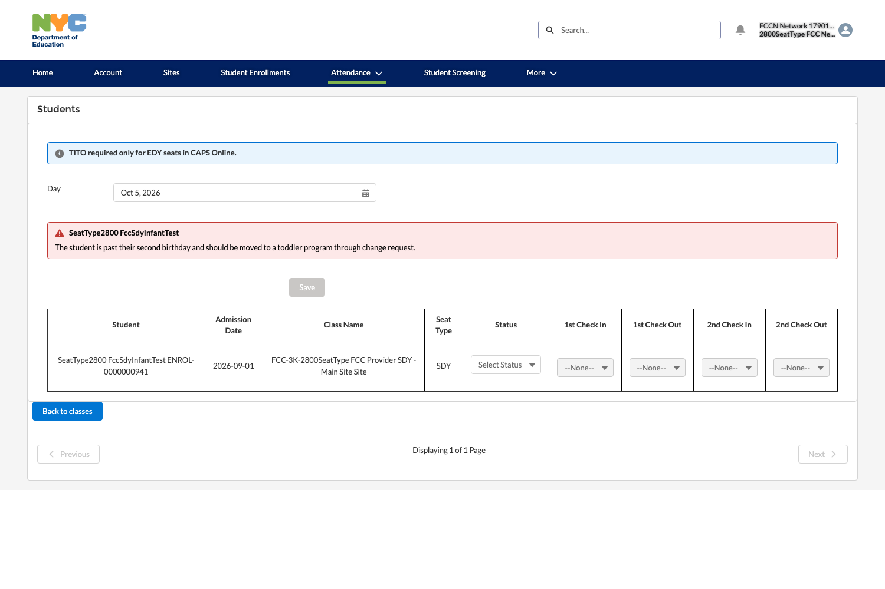
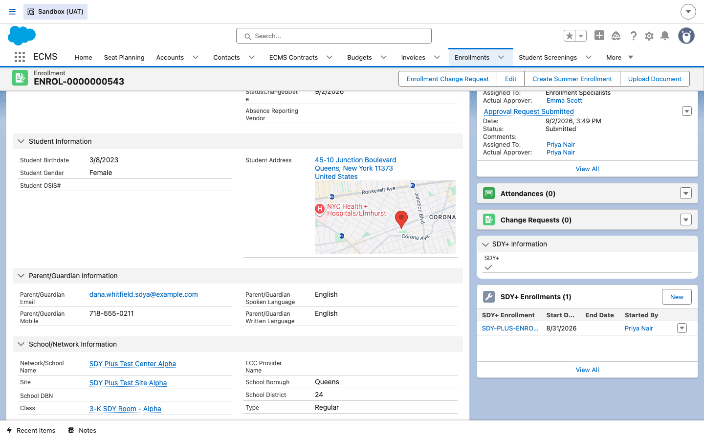
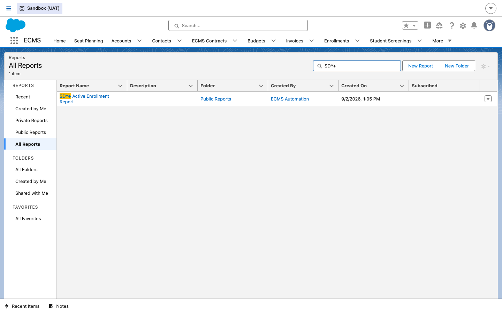
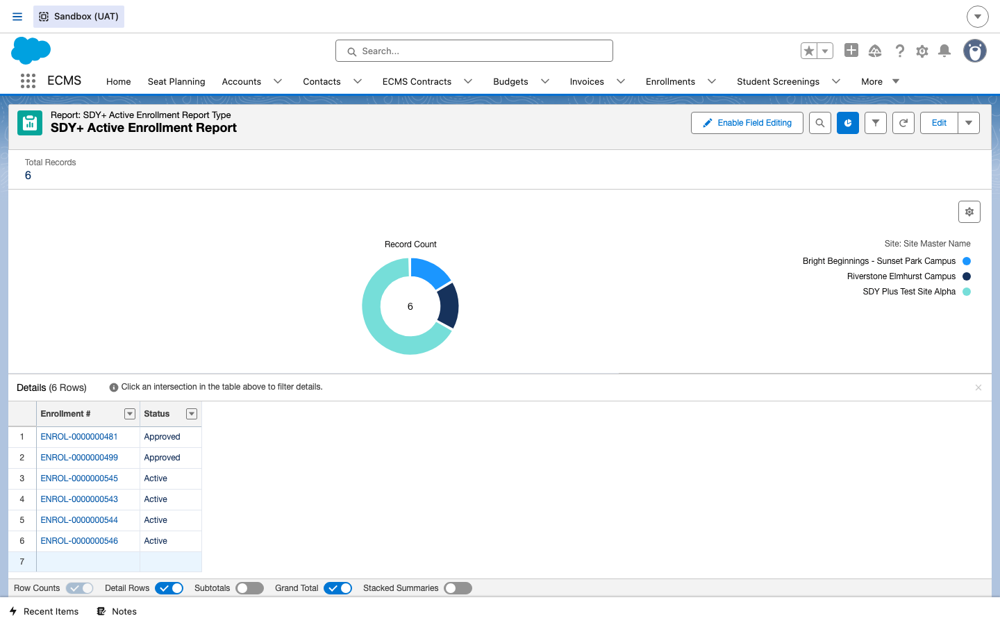
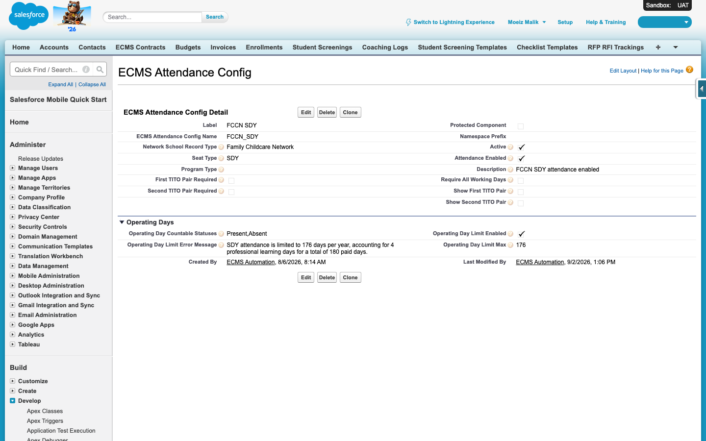
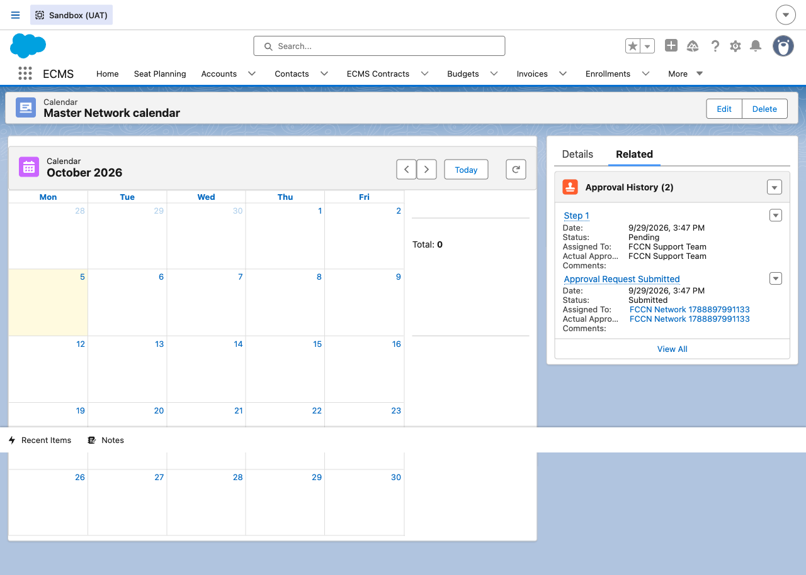
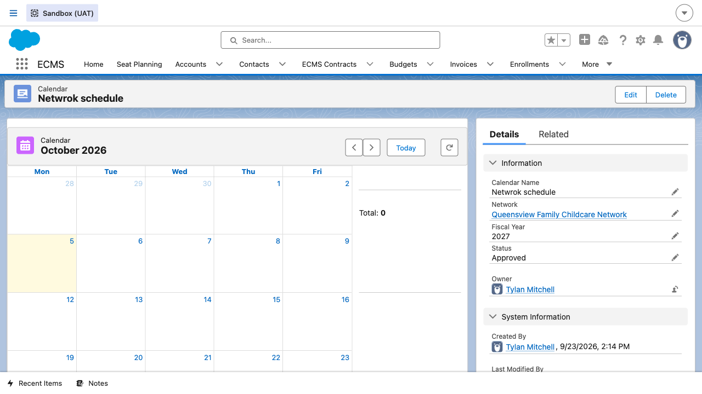

Attendance — FCCN / SDY & TITO
How daily attendance works for FCCN/FCC Provider SDY seats, and why TITO (Time In / Time Out — a clock-in/clock-out record instead of a simple present/absent flag) does not apply to them — TITO is strictly an EDY (Extended Day/Year) concern, tracked in an entirely separate external system, not in ECMS.
Overview
Standard attendance in ECMS (covered in the companion Attendance (CBO) guide) is a simple daily record: was the child present or absent on a given date, tied back to their Enrollment and Class. SDY seats — the type an FCC Provider's children are normally enrolled under — use exactly this same simple present/absent model. TITO (an actual clock-in/clock-out record, with a Check-in Time, a Check-out Time, and a second pair for a child who leaves and returns the same day) is a separate concept that only applies to EDY seats — and EDY attendance isn't entered in ECMS at all. It's tracked entirely in CAPS Online, a different system outside ECMS, with only EDY's attendance status (not the clock-in/out detail itself) imported back into ECMS afterward.
The Attendance record object does technically carry four time fields (Check-in Time, Check-out Time, Check-in Time 2, Check-out Time 2) in its data model, and they're visible on an SDY attendance record — but for SDY and EDFY seats, ECMS disables them and shows a message pointing to CAPS instead. This guide walks through what an FCCN Attendance Taker actually sees and does for a real SDY seat, and calls out why those fields exist but stay empty.
Steps
1Open Daily Attendance for an SDY site
DO From the vendor portal, go to Attendance → Daily Attendance, then pick the affiliated Provider's site.
RESULT The Sites list is scoped to this FCCN's own affiliated Providers — only sites actually affiliated with this network appear here.

2Pick the Class, then see the TITO message
DO Click into the site, then click into its Class (here, an SDY 3K class) to reach the day's student attendance grid.
RESULT Right above the student grid, ECMS shows a message: "TITO required only for EDY seats in CAPS Online." The grid's four time columns (1st Check In, 1st Check Out, 2nd Check In, 2nd Check Out) are visible but greyed out and disabled — only Status can actually be set for an SDY seat.

3Set Status and save
DO For each student, set Status (Present or Absent) and click Save.
RESULT The day's attendance is recorded — exactly the same single field a CBO Attendance Taker would set for a standard seat. Nothing else is required or possible to enter for an SDY seat.
4Submit and certify, same as standard attendance
DO Submit and certify the month's attendance the same way you would for a standard (CBO) record — the Status field (Draft → Submitted → Certified) and the certification step work identically regardless of seat type.
RESULT The record's Status advances exactly as it would for a standard CBO attendance record. There's no separate approval chain for SDY, and no TITO data involved — present/absent is all that feeds into the site's Budget and Invoice downstream.
5Check the SDY+ indicator on an Enrollment
DO Open a live SDY-seat Enrollment record and look for an SDY+ Information section.
RESULT The record shows a checked SDY+ indicator, plus a related SDY+ Enrollments list containing a child SDY+ Enrollment record that tracks its own Start Date and who started it.

6Run the SDY+ Active Enrollment Report
DO From the app's Reports tab, search
All Reports for SDY+.
RESULT A report titled SDY+ Active Enrollment Report is returned, living in the Public Reports folder.

DO Open the report.
RESULT It returns only Approved or Active enrollments, grouped by Site, with Enrollment # and Status columns, matching the enrollments seen in Step 9.

7Watch for the infant-to-toddler age validation alert
DO Be aware that when attendance is taken for a student who is past their 1st birthday (CBO/GFDC) or 2nd birthday (FCC) while still assigned to an infant seat/program, the system will evaluate the child's age and class assignment at the point of attendance entry.
RESULT This should display a non-blocking warning alert (banner, inline warning, or modal) stating the student is past the relevant birthday and should be moved to a toddler seat/program via an Enrollment Change Request. No alert is expected if the student is under or exactly one year old. Age is meant to be calculated using the facility's local time zone.
8Understand the 176-day SDY attendance limit
DO Know that for FCCN users on SDY seats, ECMS enforces a cap on total attendance days per enrollment year.
RESULT The config record shows Operating Day Limit Enabled checked, an Operating Day Limit Max of 176, and an Operating Day Limit Error Message reading exactly: “SDY attendance is limited to 176 days per year, accounting for 4 professional learning days for a total of 180 paid days.”

9Understand the monthly certification reminder
DO Know that after the 1st of each month, FCCN and CBO users with attendance still awaiting certification for a prior month receive a reminder, and that reminder repeats weekly (every 7th day) until certification is complete. The reminder scope: for CBOs it covers all enrollments' attendance, and for FCCNs it covers SDY attendance from ECMS plus EDY attendance status imported from CAPS Online.
RESULT If you (as an FCCN Network Director/Education Director, or a CBO Executive/Education/Fiscal Director with an active Salesforce user) attempt to certify a month before all of that month's enrollments and attendance days are complete, the system blocks certification and shows a message indicating all enrollments and days must be completed first — this completeness check is existing system functionality already implemented for CBO users.
10FCCN Calendar Management
Unlike CBOs, FCCNs have no Budget/Contract Seat model of their own; instead, the network's Calendar record is what tells ECMS which days count as service days for attendance and the 176-day limit covered in Step 8. This is FCCN-specific — it has no CBO equivalent in this guide.
DO As a Network Director or External Admin, create or open a Calendar record (Record Type Network) for the network and the fiscal year, and submit it for approval. By default only Network Director and External Admin personas can submit a calendar; an External Admin can extend that ability to other FCCN user personas.
RESULT The Calendar record shows a real monthly grid (not just a form) and its Approval History related list records the submission: an Approval Request Submitted row (assigned to the submitting FCCN Network user) and a Step 1 row, Pending, assigned to the FCCN Support Team — DOE's internal approver group for calendars.

DO Once the FCCN Support Team approves it, open the calendar again.
RESULT Status reads Approved, and this calendar becomes the default that every FCC Provider affiliated with this network inherits for that fiscal year — unless an approved Site-level calendar exists for a specific provider instead (Calendar also has a Site record type for exactly that override case, alongside a Master record type).
